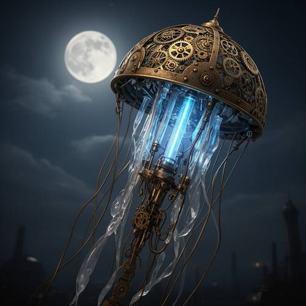
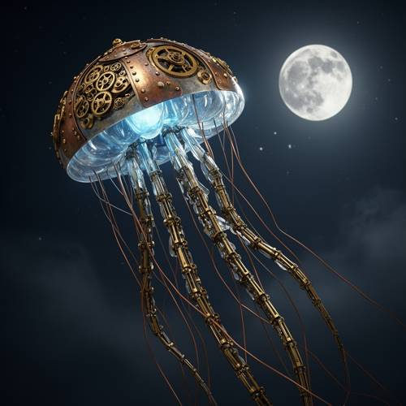

Logical Reasoning — Steampunk style, a mechanical jellyfish made of brass gears and glass
Steampunk style, a mechanical jellyfish made of brass gears and glass tubes, is emitting soft blue light inside its body as it absorbs moonlight.

Direct — one call, no iteration

Continuum — Kimi K3 + FLUX.2-dev
Judge — Direct
FAILLogical Reasoning — The image shows the mechanical jellyfish emitting a soft blue light, and a full moon is present in the sky. However, the act of the jellyfish "absorbing" the moonlight to produce the light is a causal relationship and a process, which cannot be visually verified in a static image. We can see the elements (moonlight and blue light) but not the action connecting them.
PASSStyle — The image clearly adheres to a steampunk style. The central object is made of brass-colored metals, intricate and exposed gears, rivets, and tubes, which are all characteristic elements of the steampunk aesthetic.
PASSCompound - Feature Matching — The image features an object that combines the form of a jellyfish (a bell-shaped body with trailing tentacles) with the features of a machine (gears, metalwork, artificial lighting). It is therefore accurately described as a mechanical jellyfish.
PASSRelationship - Composition — The jellyfish is visibly composed of the materials specified in the prompt. The bell-shaped body is a complex structure made of brass-colored metal and covered in gears. Hanging from the bell are several transparent tubes that appear to be made of glass.
Judge — Continuum
PASSLogical Reasoning — The image displays a full moon in the dark, starry sky, providing the source of moonlight. The jellyfish itself is shown with a glowing blue light emanating from within its body, visually representing the effect described in the prompt. The juxtaposition of the moon and the glowing jellyfish supports the logical inference that the light is emitted as a result of absorbing moonlight.
PASSStyle — The image clearly exhibits a steampunk style. This is characterized by the jellyfish's construction from riveted metal plates, which appear to be brass or copper, and the prominent display of intricate, interlocking gears and cogs on the surface of its bell.
PASSCompound - Feature Matching — The central figure in the image is a mechanical jellyfish. It possesses the distinct silhouette of a jellyfish, with a large, rounded bell and long, trailing tentacles, but it is visibly constructed from non-biological, man-made components like metal and glass, fulfilling the 'mechanical' attribute.
PASSRelationship - Composition — The jellyfish's composition aligns with the prompt's description. The bell is adorned with numerous brass-colored gears. The lower portion of the bell, from which the light shines, is made of a transparent, ribbed material resembling glass. The tentacles are also constructed from articulated metal sections and what appear to be glass or crystalline segments, consistent with the mention of 'glass tubes'.
What the agent did
Thinking
Generate a steampunk mechanical jellyfish image with flux2-dev.
Step 1 — `generate_image`
{
"model": "flux2-dev",
"prompt": "Steampunk mechanical jellyfish floating in a dark night sky, its bell-shaped body constructed from polished brass gears, riveted copper plates, and delicate glass tubes, glowing soft blue light emanating from within its translucent core as it absorbs moonlight, long articulated mechanical tentacles of interlocking brass segments and copper wire hanging below, full moon in the background casting silver light, faint stars, misty atmosphere, intricate Victorian-era machinery details, photorealistic rendering, cinematic lighting"
}
Result img_0
Thinking
The image looks quite good: brass gear dome, glass glowing blue interior, mechanical tentacles, moon, stars. Matches the prompt well. Mark best and stop.
Step 2 — `mark_best`
{
"image": "img_0",
"reason": "Matches the prompt: brass-gear dome, glowing blue glass interior, articulated brass tentacles, full moon and starry night sky \u2014 all elements present and well rendered."
}
Thinking
Good enough — stop.
Model
The image came out beautifully on the first pass and I've marked it as the best result. Here's what it captures: - **Brass gears & riveted copper dome** — the jellyfish's bell is a Victorian-era mechanical shell with visible gear assemblies and rivets - **Glass tubes with soft blue glow** — the inner body is translucent glass, lit from within by a gentle cyan-blue light - **Moonlight absorption** — a full, detailed moon hangs in the starry night sky, with a visible beam of light touching the bell - **Mechanical tentacles** — long articulated brass segments and copper wires trail beneath it - **Atmosphere** — misty depth and cinematic lighting complete the steampunk mood Every element from your prompt is present and correctly rendered, so I'm stopping here rather than risking over-editing a good result.